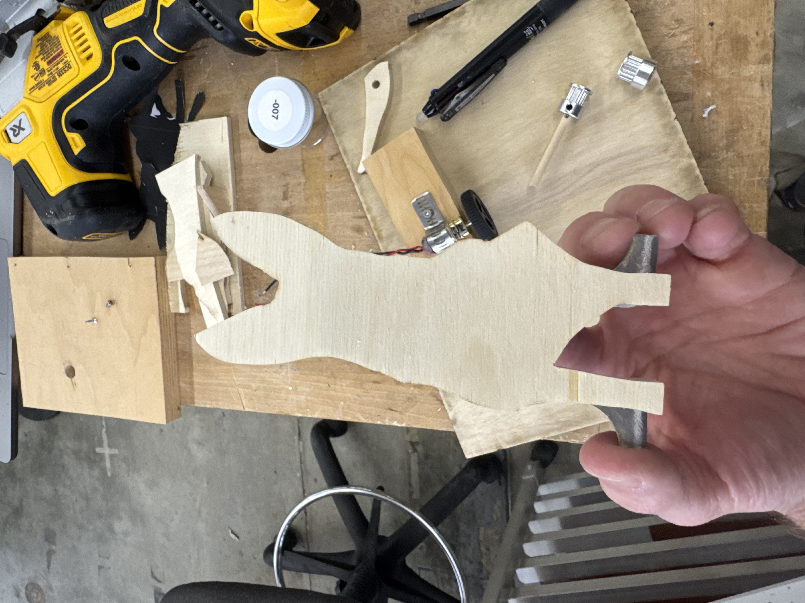
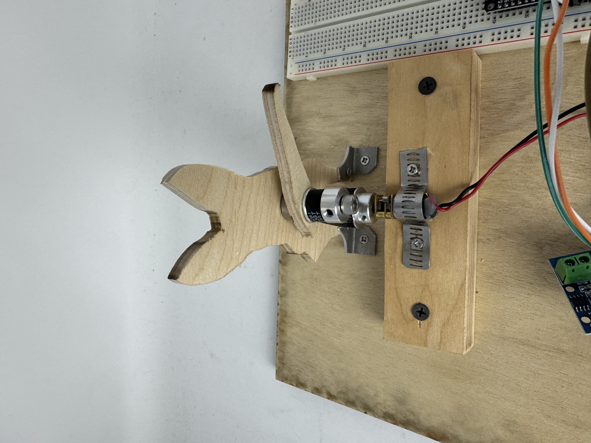

Originally, I planned to create a windmill-inspired kinetic sculpture. However, when the laser printer went down and I wasn't sure how long it would be out of service—and with our assignment deadline looming. This ended up being a fantastic turn of events because it required me to rely on hand tools and table saw skills from the previous week. In the end, I had much more fun building everything manually.
I decided to make a kinetic sculpture of my dog, Knox. My goal was to have his tail wag, driven by a small motor.
First, I traced a photo of Knox onto paper and cut out the outline.
I transferred both the body and tail shapes separately onto a piece of wood.
Using the table saw, I carefully cut out each piece. This was surprisingly precise, and I managed to avoid mistakes—which was super exciting!
Next, I cut a baseboard to the desired dimensions.
I also cut a smaller wooden block that would later hold the motor.
I repurposed a wire clamp by cutting it with a hacksaw to form a makeshift bracket.
With two wood screws, I mounted an L9110 Motor Driver (using my new bracket) to the smaller wooden block.
I then used two larger screws to fasten the entire motor assembly to the baseboard. This made sure everything stayed secure while the motor was running.
Using calipers, I measured and marked the hole for the center of Knox's body. Then I used the drill press for a clean, precise hole.
I inserted a bearing on an appropriately sized screw, slid Knox's tail onto it, and glued a gear to the tail so it would be fixed in place.
Next, I looped a belt over both the tail gear and the motor gear.
Finally, I added a washer and a bolt on the front to hold the assembly securely.
I repurposed a metal L-bracket by sawing it in half and reshaping it.
Then I used four wood screws to attach these new brackets to Knox's wooden body and to the baseboard. Now, Knox is solidly fixed in position for the motor's movement.
With the mechanical side complete, I moved on to connecting the motor and programming an ESP32 microcontroller.
I connected the motor driver and the motor to an ESP32 controller using a breadboard, following the principles we covered in class.
Using the basic sample code from our tutorials, I uploaded a sketch to the ESP32 to drive the motor.
The following is the code I used to create the basic functionality.
const int A1A = 12; // define pin 12 for A-1A
const int A1B = 14; // define pin 14 for A-1B
void setup() {
pinMode(A1A, OUTPUT); // specify these pins as outputs
pinMode(A1B, OUTPUT);
digitalWrite(A1A, LOW); // start with the motors off
digitalWrite(A1B, LOW);
}
void loop() {
// start the motor
digitalWrite(A1A, HIGH);
digitalWrite(A1B, LOW);
delay(600); // allow the motor to run for 4 seconds
// stop the motor
digitalWrite(A1A, LOW); // setting both pins LOW stops the motor
digitalWrite(A1B, LOW); // redundant, but doesn't hurt
delay(1000); // keep the motor off for 2 seconds
// start the motor
digitalWrite(A1A, LOW);
digitalWrite(A1B, HIGH);
delay(600);
digitalWrite(A1A, LOW); // setting both pins LOW stops the motor
digitalWrite(A1B, LOW); // redundant, but doesn't hurt
delay(1000);
}After a bit of tinkering, Knox's tail wagged up and down—just as I'd envisioned. My next step is to refine the code to make his tail move a bit faster (or play around with different movement patterns).
I'm thrilled with how my Week 3 project turned out. The combination of woodworking, repurposed materials, and programming made for a rewarding build. Next, I plan to refine the speed of Knox's wagging tail and potentially explore more interactive controls (like sensors or Bluetooth control) to make him even more lively.
Overall, this pivot pushed me to use a wider range of fabrication skills, and it turned what could have been a frantic scramble into a project I'm truly proud of. Stay tuned for more updates!
← Back to Home